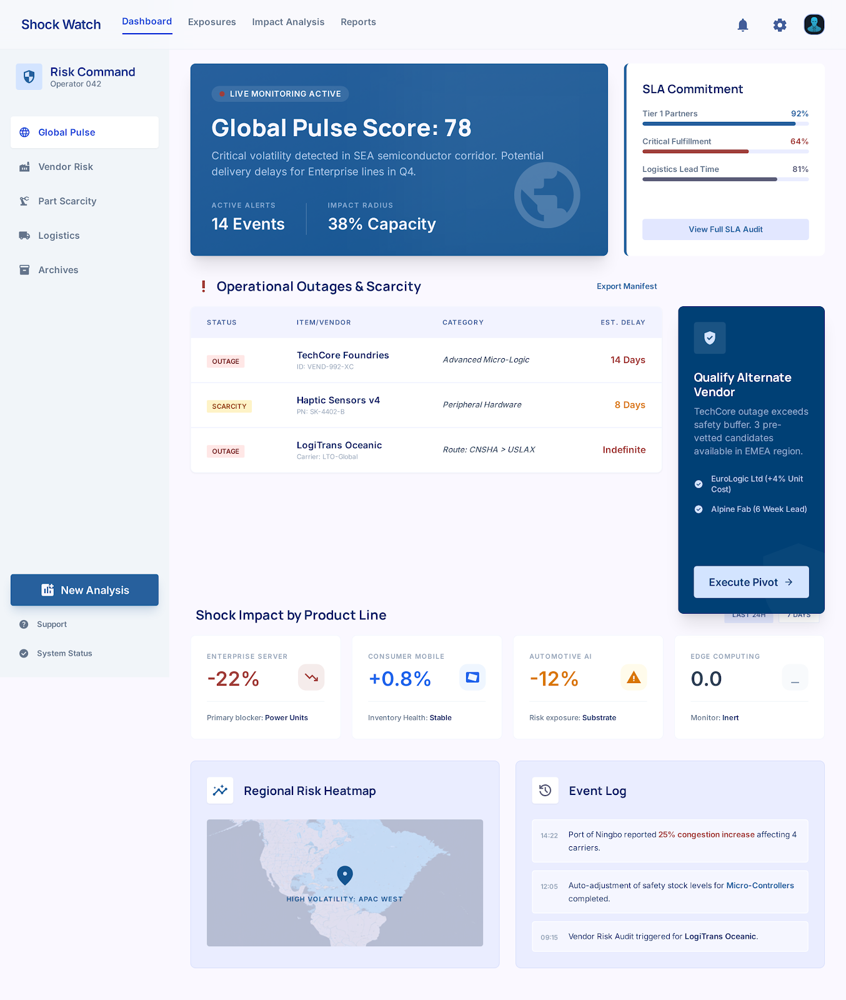

PF SAFE DEMO · 2026-03-06-p002
Supply Chain Shock Watch
Track supplier and logistics shocks so operators can see which disruptions matter most first.
ingest status
Imported from Stitch exportThe approved Stitch screen is now hosted through a local PF-safe wrapper for reliable preview generation and publication.
- Source preserved as local artifact
- Public demo path avoids remote CDN dependency
- Preview uses the shipped Stitch screen
